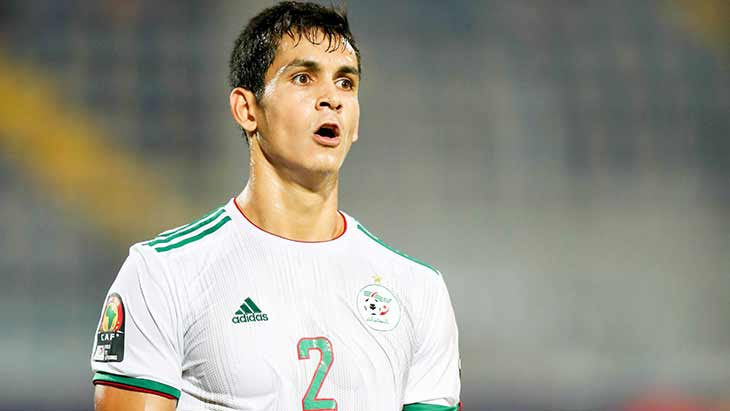

Bienvenue sur la page de Aïssa Mandi

Biographie
Aïssa Mandi est né le 22 octobre 1991 à Châlons-en-Champagne, il est un footballeur international algérien, qui joue au poste de défenseur central au Villarreal CF.
Carrière en club
2009-2016 : Reims
2016-2021 : Betis Séville
2021 - ...? : Villarreal
En nationale :
En novembre 2013, il est convoqué pour la première fois par l'entraîneur de l'équipe nationale Wahid Khalihodzic en Algérie pour affronter le Burkina Faso dans le cadre du match retour des éliminatoires de la Coupe du monde 2014 le 19 novembre 2013. Équipe de football au stade Mustafa Chuck de Blida , Algérie. Le 5 mars 2014, il a débuté comme titulaire lors d'un match amical contre la Slovénie au stade Mustafa Chak, où il a réalisé une performance honorable. Il avait 14 ans dans l'équipe pour la Coupe du monde et Mandy a raté le match. L'ouverture, mais souvent la suite du match se joue sur la défensive droite , notamment face à l'Allemagne en 8e de finale.